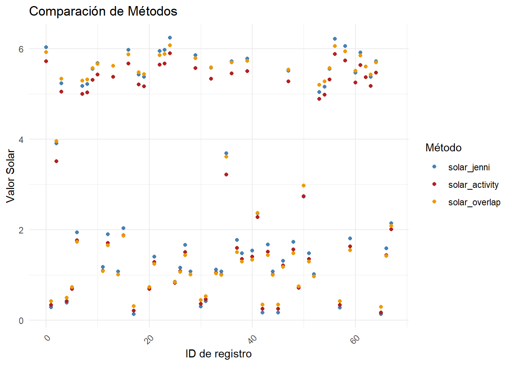
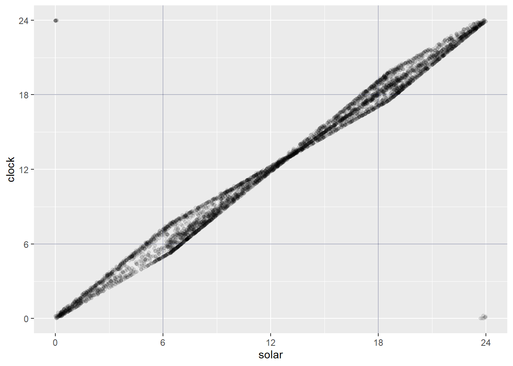

4 Hora solar
En este apartado se convertiran todos los registros independientes de hora reloj a hora solar. Se explora el uso de dos paquetes para este fin, se selecciona uno y luego se comparan los datos obtenidos con otros generados por el Laboratorio.
Primero, cargamos las funciones necesarias:
4.1 Paquete circular
Vamos a calcular la hora solar de todos los registros utilizando la metodología de Nouvellet et al. (2011), donde se utiliza el paquete circular.
Preparamos los datos y agregamos una columna sunTime_result para almacenar los valores de la hora solar.
# Load data
load("data_processed/datos_procesados_v0.RData")
# Process data
overlap_data <- data %>%
mutate(
clock_time = hour_to_radians(datetime),
dates = as.POSIXct(datetime, tz = "America/Montevideo"),
sun_time_result = NA
) %>%
select(site, datetime, sp, clock_time, dates, lat, lon, sun_time_result)Luego, calculamos la hora solar para cada registro y almacenamos el resultado.
start_time1 <- Sys.time()
for (i in 1:nrow(overlap_data)) {
ClockTime <- overlap_data$clock_time[i]
Dates <- overlap_data$dates[i]
Coords <- sp::SpatialPoints(matrix(c(overlap_data$lat[i], overlap_data$lon[i]), nrow=1), proj4string=sp::CRS("+proj=longlat +datum=WGS84"))
overlap_data[i, "sun_time_result"] <- sunTime(ClockTime, Dates, Coords)
}
end_time1 <- Sys.time()
#save(overlap_data, file = "data_processed/overlap_data.RData")Ahora se puede observar el resultado en la columna “sun_time_result”, estos valores de “tiempos solares” están en radianes, donde \(\frac{\pi}{2}\) corresponde al amanecer y \(\frac{3\pi}{2}\) al atardecer.
4.2 Paquete activity
El paquete activity ofrece una alternativa mucho más rápida para calcular la hora solar.
Solamente aplicando la función solartime ya se obtiene la hora solar de cada punto en radianes.
start_time2 <- Sys.time()
tmp <- solartime(data$datetime,
data$lat,
data$lon,
tz=-3,
format = "%Y-%m-%d %H:%M:%S")
data$solar <- tmp$solar
data$clock <- tmp$clock
end_time2 <- Sys.time()4.3 Comparación de resultados
Vamos a comprar los resultados de ambos paquetes y cruzarlo con los datos que calculo Jenni. Aquí solo se comparan los datos de una especie (Ctho) en un área protegida (CP), solamente con el fin de poder visualizar mejor los resultados.
load("data_processed/comparando_suntimes/jenni_datos.RData")
load("data_processed/comparando_suntimes/activity_datos.RData")
load("data_processed/comparando_suntimes/overlap_datos.RData")
df <- left_join(jen, act) %>%
left_join(over) %>%
rename(solar_overlap = overlap_solar)
df$ids <- 0:(nrow(df)-1)
df <- df %>%
select(ids, starts_with("solar"))
df_long <- melt(df, id.vars = "ids", measure.vars = c("solar_jenni", "solar_activity", "solar_overlap"))
ggplot(df_long, aes(x = ids, y = value, color = variable, group = variable)) +
geom_point() +
labs(title = "Comparación de Métodos",
x = "ID de registro",
y = "Valor Solar",
color = "Método") +
theme_minimal() +
scale_color_manual(values = c("steelblue", "firebrick", "orange2")) +
theme(axis.text.x = element_text(angle = 45, hjust = 1))
También se puede ver la diferencia entre las horas reloj y solar.
load("data_processed/datos_procesados_v1.RData")
tmp <- data
tmp$clock <- tmp$clock * 12/pi
tmp$solar <- tmp$solar * 12/pi
ggplot(tmp, aes(solar, clock)) +
geom_point(alpha = 0.1) +
geom_vline(xintercept = c(6, 18), color = "#0C14474D") +
geom_hline(yintercept = c(6, 18), color = "#0C14474D") +
scale_x_continuous(
name = "solar",
breaks = c(0, 6, 12, 18, 24),
labels = c("0", "6", "12", "18", "24")
) +
scale_y_continuous(
name = "clock",
breaks = c(0, 6, 12, 18, 24),
labels = c("0", "6", "12", "18", "24")
)
Se observa una diagonal marcada que representa la relación directa entre la hora solar y la hora del reloj civil. Además, se nota una forma de “rombo” en el gráfico, la cual puede surgir debido a la variación en la duración del día y la noche a lo largo del año. También hay algunos puntos aislados al inicio y al final de los ejes. Estos puntos representan registros tomados cerca de las 12 o cerca de las 24 horas (convertido a radianes).